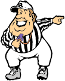

Last updated 11/06/13
Any cheating, whether real or perceived, will NOT be tolerated.
This includes anything that goes against the general spirit of the
league.
If you cannot abide by this rule, you will forfeit any
Each team has a roster with a maximum of 16 active (not on injured reserve) players consisting of NFL quarterbacks (QB), running backs (RB), receivers (WR and TE), place kickers (PK) and team defenses (DT). A roster also has a maximum of three inactive (on injured reserve) players that are not on the NFL's season-ending I-R. A roster can contain less than 16 active players.
Players are initially selected at the all-important draft held before the start of each season. After the draft, players can only be acquired through approved transactions, either via free agency or from other teams via trades.
At the end of the season all players are returned to the common pool of available players. No player can be kept for consecutive seasons except if drafted again the following season. In other words, the AFFL is NOT a keeper league.
Players are selected during a 16-round draft that takes place at least one day before the first game of the NFL season. The draft is held sometime during the last week in August or first week in September, as close to the beginning of the season as possible to avoid any preseason injuries from trashing a team's lineup.
Each team is given 16 free selections, one for each round of the draft. If a team fails to select 16 players during the draft, the unused draft choices cannot be stockpiled for future free use. When the draft ends, the free selections provided at that time also end.
There are time limits for making selections during the draft, usually two
minutes per player for round one and 90 seconds per player for the
remaining rounds.
This time limit is set by the
NOTE:
Trades are allowed prior to and/or during the draft
with approval of the
The draft order of round one will be randomly drawn at least one week prior to the draft in a predetermined, tamperproof method supervised by a minimum of one Commissioner. Subsequent rounds (2-16) are determined by reverse order of the previous year's finish, with new (expansion or replacement) teams drafting last. The draft order will be reversed every round in serpentine fashion.
If an established team leaves the league, the replacement team does NOT inherit the established team's draft position. Instead, the remaining established teams with better records based on the previous year's finish all move up one position in the draft order.
New (expansion or replacement) teams will draft after established teams, except when the draft order is reversed. If more than one new team is added to the league, the new team draft order is determined by a random drawing at least one week prior to the draft in a predetermined, tamperproof method supervised by a minimum of one Commissioner. New teams are eligible for the first round drawing.
All teams should prepare for the draft. Do not try to wing it - you will be in for a miserable season.
Owners are responsible to be at the draft either in person or remotely and, if not, to ask someone (not another owner) to draft a team for them. If you cannot con someone to draft for you, you must at least provide a comprehensive list of players (160 players are selected in the draft) that you would like selected for your team and the league office will draft for you. If you do not show and do not provide a list do not under any circumstances come pissing and moaning to the league office about any of your draft picks. See Rule P.M. -- Pissing and Moaning (The Seltzer Rule).
When it's time to make a draft selection (a.k.a. you are on the clock),
you have the allotted amount of time to pick any NFL player not
previously selected in the current year's draft.
It is your responsibility to know who has already been drafted - asking
"is he available?" or trying to draft a player who has already been
selected slows down an already slow process.
Repeat offenses could result in the same punishment as not drafting
within the allotted time - this is up to the
A team can consist of any combination of NFL players, but it is recommended that you keep in mind players' bye weeks and the contents of your starting lineup. In general, a good rule of thumb is to draft a team according to the following guidelines:
Once you make your draft selection by informing the
Immediately after the last pick of the draft, players can only be acquired either as free agents from the common pool of available players or through trades with other teams.
The
NOTE: A player acquired via free agency or trade is automatically placed on the bench even if the player being replaced was a starter.
At any time during the regular season or postseason a team may select any
NFL player not already on an AFFL roster (a.k.a. available player pool),
but the
Because rosters are limited to a maximum of 16 active players, a player must be dropped to keep the roster at the maximum of 16 active players unless a player can be placed on injured reserve. Also, this player must be dropped or placed on injured reserve PRIOR to picking up the free agent. In other words, the roster space must be available in order to pick up a free agent.
The team is charged a fee of two units for each player picked up as a free agent.
Trades of players are allowed at any time before the trading deadline,
but the
No trades are allowed after the trading deadline, which is after the completion of Week 13 of the NFL regular season. There are no exceptions to this rule (this prevents team "Fire Sales"), any complaints see Rule P.M. -- Pissing and Moaning (The Seltzer Rule).
Each team is charged a fee of
number players in trade
⁄
number teams in trade
units.
For example, in a
NOTE:
Trades are allowed prior to and/or during the draft with approval of the
Any team who has a player placed on inactive status by the player's NFL
team may place that player on their AFFL team's injured reserve.
Each team can have no more than three players not on the NFL's
season-ending I-R on injured reserve at any one time.
When the player becomes an active player in the NFL, your team must also
activate the player.
A player must be dropped if this brings your roster over the limit of 16
active players.
All moves of players both on and off of injured reserved must go through
the
The
There is no fee charged for moving a player on and off of the injured reserve list beyond those fees associated with picking up a player or trading for a player.
NOTE:
A player is considered "inactive" by the NFL when on season-ending
injured reserve,
NOTE: There is no limit to the number of inactive players on your roster that are on the NFL's season-ending I-R. This is because a player is lost for the season when listed on the NFL's season-ending I-R, so there is no reason to return him to the available player pool.
NOTE: Team defenses cannot be placed on injured reserve.
All trades are frozen after 4:00PM CST Friday until 8:00AM CST on the first work day after the weekend. In weeks with Thursday night games, trades are frozen after 4:00PM CST Thursday. Trades are frozen after 4:00PM CST Wednesday for the Thanksgiving Day and subsequent weekend games. No trades will be allowed during the freeze. There will be NO exceptions to this, don't even think about asking.
The league consists of ten teams that are randomly divided into two divisions (East and West) of five teams each before the draft. Every week during the regular season teams play each other in a head-to-head format according to the official schedule, which is published before the draft. There are 15 games in the regular season (corresponding with NFL Weeks 1-15), with each team playing every other team within the same division twice (eight games total), every team in the other division once (five games total) and two teams in the other division once more (two games total). At the end of the regular season, four teams qualify for the playoffs and take place in a single-elimination tournament in a head-to-head format.
For every game played, each team selects a starting lineup consisting of a maximum of:
NOTE: Receivers may be either wide receivers or tight ends.
Playing less than the maximum number of players at any position (for
example, no team defense) is allowed.
However, playing more than the maximum number of players at any position
(for example, three running backs) is not allowed.
This includes mislabeling a player, such as starting a player in your
lineup as a receiver when that player is recognized as a running back by
the NFL.
The highest point
Eack week, the lineup(s) identifying starter(s) playing on a given day
must be filed with the
What this means is that their are four lineup submission deadlines each week:
Once a starter is turned in on a lineup and his lineup deadline passes, that starter cannot be replaced in subsequent lineups for the remainder of the week. Also, if a previous week's starter is not replaced on a lineup and his lineup deadline passes, that starter cannot be replaced in subsequent lineups for the remainder of the week.
NOTE: If an NFL game is postponed for whatever reason(s), the lineup submission deadlines above still apply. For example, if you turn in a lineup with a starter playing Thursday before the Thursday deadline and that game is postponed until Sunday, you can replace that starter by turning in another lineup before the Sunday deadline. However, if you turn in a lineup with a starter playing Sunday before the Sunday deadline and that game is postponed until Monday, that starter cannot be replaced after the Sunday deadline passes.
If you fail to submit any lineup before the final deadline, the previous week's will be used. If there is no previous week's lineup (e.g. Week 1 games) you will score a zero for that week. If you fail to submit a complete lineup before the final deadline, all missing starters will score a zero for that week.
After the final deadline no lineup changes are allowed. If a lineup is received after the final deadline, it will be applied toward the following week. Up until any deadline you may change the lineup as many times as necessary by refiling the updated lineup.
NOTE:
If you choose to rely on e-mail as the means for filing your lineup, be
aware that a) your e-mail may be timestamped after the deadline even
though you sent it on or before the deadline, and b) your e-mail may not
arrive at all. Either case will result in the previous week's lineup
being used - the league cannot be held accountable for the behavior of
various e-mail services. If you don't have faith in your e-mail service
or you are getting too near the deadline to trust your service's
timestamping, you can always call your lineup in to the
All teams must give a complete lineup to the team they are playing
the current week.
This includes teams that are playing the same lineup as the previous
week.
Failure to give the opposing team a lineup may result in a fine of two
units.
It is up to the opposing team to notify the
Scores are determined as follows by a team's starting players' production in their NFL games from the same week:
NOTE: Individual players earn both offensive and special team scores. For example, a receiver scores six points for running a punt back for a touchdown; likewise, a place kicker scores six points for throwing a touchdown pass off a failed or faked field goal attempt.
NOTE: Defensive scores DO NOT include a touchdown or safety scored as the result of a failed or faked punt or field goal attempt (these are considered special teams scores) OR as the result of a play the offense makes on the defense.
Scores will be compiled and published by the Statistician or
Scoring disputes must be reported to the
NOTE:
On rare occasions the NFL or its official statistical service, the Elias
Sports Bureau, will review a play and change the originally recorded
results.
The AFFL will honor these changes and alter game results and statistics
accordingly as long as they are officially released by the NFL or Elias
before the subsequent week's lineup submission deadline - such
changes are not subject to the aforementioned 4:00PM CST Wednesday
deadline because that deadline only applies to errors made by the
Statistician,
League standings are based on:
All teams in the league are required to pay an entrance fee of 15 units. Ten of these units go into the pot to be distributed at the end of the season, while the other five units pay the fees for the league's statistics service.
The losing team in each regular season AFFL game owes the league four units. In the event of a tie during the regular season, each team owes the league two units. These units will be collected at the end of the season.
Units from losses, entry fees, roster changes and fines are used for prizes as well as the postseason fiesta. Pay these debts promptly!
Four teams qualify for the playoffs:
The two wildcard teams will be determined by their final standings regardless of division. The wildcard team with the worst record will play the division leader with the best record, while the wildcard team with the best record will play the division leader with the worst record. The two winners will meet the following week in the ATM Bowl to decide the league championship.
The playoffs will take place during the 16th and 17th weeks of the NFL regular season.
Lineups, setting lineups and
scoring are all handled the same way as during the
regular season.
Any tie games that occur during the playoffs will be settled by the same
tiebreaker rules used to determine the final
standings.
If a tie still exists, the tie will be settled by a coin toss.
One of the team owners will call the coin toss, either heads or tails,
prior to it being tossed in the air.
Whether or not the call matches the way the coin lands determines the
game's winner.
The
The league office will determine the allocation of awards at the end of the season. In general, the allocations fall somewhere along the following lines:
The league champion also receives a perpetual plaque with the year, team's name and owner's name engraved on the next available nameplate. The previous champion is responsible for engraving this information for the new champion. Cost of engraving comes out of the pot before the awards are given to the playoff teams.
NOTE: A perpetual plaque means it is annually passed on to each season's winner. Unless, of course, some classless moron steals it.
Rules can be added/amended only with approval from a minimum of 75% (eight out of ten) of the league's owners. Rules cannot be added/amended during league play, which means they are frozen between the kickoff of the first NFL game of the year and the end of the last regular-season NFL game of the year. Ideally, change proposals should be brought up and distributed prior to the draft and be voted on at the draft.
See the proposed rule changes for a list of the rule changes that have been raised to date.
Pissing and Moaning is a major offense to the tranquility of the league.
Owners who piss and moan will be fined accordingly.
The fine will be assessed by the
Owners in violation of this rule are subject to a fine.
NOTE: Here is the only documented occurrence in human history where pissing and moaning actually worked...
If you ask one Commissioner a question and don't like the answer given, don't go ask the other Commissioner the same question in order to get a different answer without telling him/her the answer the first one gave you. If you're not happy with the answer, let the Commissioners contact each other and reach an agreement.
Owners in violation of this rule will forfeit that weekend's game as well as be subjected to a fine.
Stealing the league plaque because you drop out after winning in order to run home to mommy or because it is full is a pathetic low-life thing to do! Normally the winning team's name is engraved on the next available nameplate or, in the event that the plaque is full, an extension is bought with new nameplates, both of which are much more economical options than buying a brand new plaque and thus the league can foot the bill. But when the plaque is stolen, a brand new one must be bought and, because of the greater expense, the cost is passed on to the owners the following year. So, not only is stealing the league plaque a classless bottom-feeding thing to do, it will probably gain you nine new enemies as well (assuming everyone in the league actually liked you in the first place).
Owners in violation of this rule will live out the remainder of their natural lives in a fiery over-humidified cesspool, a.k.a. Georgia.
The
In all matters, the decision of the
| 11) 1997.1: | Award performance points - Approved |
Create three new offensive scoring categories for individual players
and award three points for each of the following plateaus reached in
a single game:
|
|
| 12) 1997.2: | Require a tight end - Defeated |
| Make one tight end (TE) a mandatory position in a team's starting lineup and treat it as an individual player in terms of offensive and special teams scoring categories. Add two additional draft picks to allow for the inclusion of the mandatory tight end. | |
| 13) 1997.3: | Require a defensive team - Approved |
Make one team defense (DT) a mandatory position in a team's starting
lineup, create three new defensive scoring categories and award
points for each of the following achievements:
|
|
| 14) 2001.1: | Balance division schedules - Approved |
| Instead of the current scheduling format, which has four teams playing nine divisional games while the fifth team plays only eight, switch to a format where all teams play eight divisional games. This balances intradivisional play by having each team play each other team exactly twice, thereby eliminating some teams from playing a third game against a team within their division which can lead to ½-game margins in the divisional standings. | |
| 15) 2004.1: | Enhance injured reserve - Approved |
| Instead of allowing a maximum of three players on a team's injured reserve, allow a maximum of three players on a team's injured reserve that are NOT on the NFL's injured reserve. This keeps players that are on the NFL's injured reserve from being dropped and returned to the free agent pool, which makes no sense since they are unable to play for the rest of the season. | |
| 16) 2006.1: | Hold draft lottery earlier - Approved |
| Instead of holding the draft lottery immediately before the draft, hold the draft lottery at least one week prior to the draft. This allows teams to prepare properly for a draft since most strategies are based on a team's position within the first round. Also, because team owners will no longer participate in the lottery, this new lottery needs to be supervised by at least one Commissioner. | |
| 17) 2006.2: | Move lineup submission deadline - Approved |
| Instead of requiring lineups to be submitted by the last weekday's 4:00PM CST deadline before the kickoff of the first NFL game of the week, move the deadline to one hour before the kickoff of the first NFL game of the week. This allows teams to better handle last-minute personnel and weather changes, especially when the first NFL game of the week takes place on a weekend day. | |
| 18) 2008.1: | Allow multiple, partial lineup submissions - Approved |
Instead of requiring a single lineup identifying all starters to be
submitted one hour before the kickoff of the first NFL game of the
week, allow multiple, partial lineups identifying only starters
playing on a Thursday, Friday or Saturday to be submitted five minutes
before the kickoff of the first NFL game of that day with the final
lineup deadline being five minutes before the first NFL game on Sunday.
Once a starter is turned in on a lineup and his lineup deadline
passes, that starter cannot be replaced in subsequent lineups for the
remainder of the week.
Also, if a previous week's starter is not replaced on a lineup and
his lineup deadline passes, that starter cannot be replaced in
subsequent lineups for the remainder of the week.
This creates the following four lineup submission deadlines:
|
|
| 19) 2008.2: | Overturn 2006.1 - Defeated |
| Instead of holding the draft lottery at least one week prior to the draft with Commissioner supervision, hold the draft lottery immediately before the draft with owner participation. This allows Ace to pull his ball out of it's bag in a public place at least once a year. | |
| 10) 2008.3: | Change rushing/receiving performance points - Approved |
| Instead of awarding one point for every 50 yards rushing or receiving earned after reaching the initial 100-yard plateau in the same category in the same game, award one point for every 25 yards earned after the initial plateau is reached. This more evenly aligns the ratio of bonus yardage (25/50 proposed vs 50/50 current) to initial plateau (100/300) between rushing/receiving and passing, so a 200-yard rushing game would be the equivalent of a 500-yard passing game. | |
| 11) 2008.4: | Change rushing/receiving performance points - Defeated |
| Instead of awarding one point for every 50 yards rushing or receiving earned after reaching the initial 100-yard plateau in the same category in the same game, award one point for every 33 yards earned after the initial plateau is reached. This more evenly aligns the ratio of bonus yardage (33/50 proposed vs 50/50 current) to initial plateau (100/300) between rushing/receiving and passing, so a 200-yard rushing game would be the equivalent of a 450-yard passing game. | |
| 12) 2008.5: | Enhance defensive team scoring - Defeated |
In addition to the points awarded to defensive teams for touchdowns
and safeties, create two new defensive scoring categories and award
points for each of the following achievements:
|
|
| 13) 2008.6: | Change lineup/transaction submission method, remove transaction freeze - Defeated |
| Instead of weekly lineups being filed with the Commissioner(s), or in his/her/their absence a designate, and your opponent before the deadline, weekly lineups must be submitted to a blog type site accessible by all. Additionally, the transaction freeze, where all roster activity is frozen after 4:00PM CST Friday until 8:00AM CST on the first work day after the weekend, is eliminated. Free agent pickups will be awarded on a first-come, first-served basis with the timestamp of the blog entry being the determining factor. However, commissioners must still approve all transactions and free agents acquired after the kickoff of the first NFL game of the week cannot be used until the following week regardless of commissioner approval. | |
| 14) 2008.7: | Change draft order - Defeated |
Instead of holding a lottery to randomly determine the draft order of
round one and switching to a serpentine draft based on reverse order
of the previous year's finish in rounds 2-16, use a serpentine draft
based on reverse order of the previous year's finish for all rounds
and introduce an FDP (First Draft Pick) Bowl to determine the order
of the first four picks much the same way the ATM Bowl determines the
order of the last four picks.
To determine the FDP Bowl "champion" (a.k.a. best of the worst), the
#7 team plays the #10 team while the #8 team plays the #9 team in
Week 16 and the two winners play in Week 17 - the winner gets the
first draft pick and the loser gets the second draft pick while the
first-round losers get the third and fourth picks based on the final
standings.
Specifically, the following draft order is used for odd-numbered
rounds and the opposite is used for even-numbered rounds:
|
|
| 15) 2008.8: | Change rushing/receiving performance points - Defeated |
| Instead of awarding one point for every 50 yards rushing or receiving earned after reaching the initial 100-yard plateau in the same category in the same game, eliminate the initial plateau and award one point for every 33 yards earned. This awards sub-100 yard efforts, so a 200-yard rushing game would be the equivalent of a 450-yard passing game. | |
| 16) 2010.1: | Eliminate transaction freeze for free agents - Approved |
| Instead of beginning the transaction freeze for free agents at 4:00PM CST of the last weekday before the kickoff of the first NFL game of the week and ending it on 8:00AM CST of the first work day after the weekend, eliminate the transaction freeze for free agents altogether. This allows teams to better handle last-minute personnel changes such as the Friday injury report and Sunday morning deactivations, both of which occur during the freeze. Owners must notify the Commissioner(s) and all other owners of the free agent transaction if it is prior to Sunday's lineup deadline BUT can start the player without Commissioner approval as long as the player's lineup deadline has not yet passed. However, owners assume all responsibility for starting a player acquired in a free agent transaction without approval from the Commissioner(s). For example, if two teams pick up the same player Saturday and start him without receiving approval from the Commissioner(s), the first team to submit the transaction gets the player's points while the other team gets zero points for that player. This rule change DOES NOT apply to trades. |